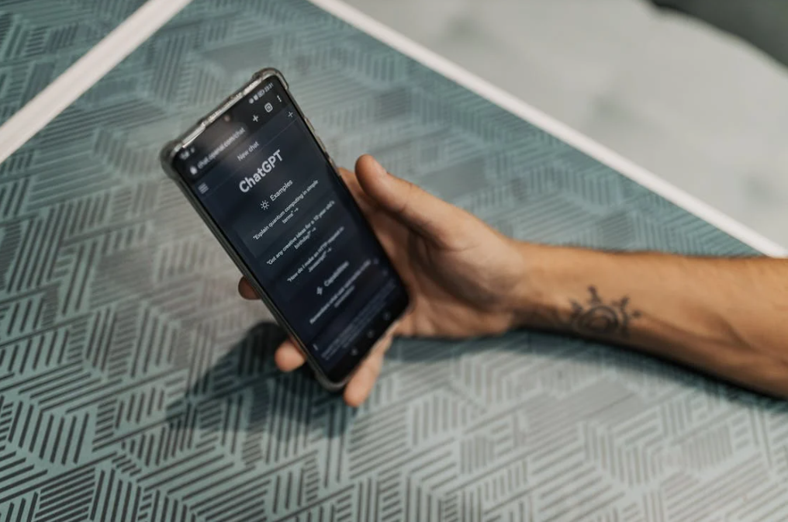

CDN是一种通过在网络中部署多个节点，将内容缓存到靠近用户的地理位置，以减少网络延迟、提高数据传输速度和可用性的技术。在高清视频分发中，CDN的关键作用体现在以下几个方面：
降低网络延迟：通过智能路由和就近接入，CDN可以将视频内容从最近的节点传输给用户，显著减少传输路径上的延迟。
提高传输速度：CDN节点通常具有强大的网络带宽和高速存储设备，能够高效地将视频数据推送给用户，确保视频流畅播放。
减少服务器负载：通过分散请求，CDN可以显著降低源服务器的负载，避免单点故障，提高系统的整体稳定性。
提升用户体验：CDN的加速效果能够直接提升视频播放的流畅度和响应速度，从而提升用户满意度和忠诚度。
虽然CDN能够显著提升高清视频的分发效率，但其成本也相对较高。为了平衡成本与性能，开发工程师需要采取一系列成本优化策略。
动态调整CDN资源配置
智能调度：利用智能调度算法，根据用户分布、网络状况和视频热度等因素，动态调整CDN节点的资源配置。在高流量时段或热点地区增加节点资源，在低流量时段或冷门地区减少资源投入，以实现资源的灵活调度和成本的有效控制。
弹性扩容：通过弹性扩容机制，根据实际需求动态增加或减少CDN节点的数量。在流量激增时，迅速扩容以满足用户需求；在流量回落时，及时缩减资源以降低成本。
优化视频编码与压缩
高效编码算法：采用先进的视频编码算法（如H.265/HEVC）对视频进行压缩，以在保持视频质量的同时减少数据量，从而降低CDN传输成本。
自适应编码：根据用户的网络带宽和设备性能，动态调整视频的编码参数（如分辨率、码率等），以在保障用户体验的前提下，实现传输成本的最小化。
精准的内容分发策略
内容预热：对热门视频进行预热处理，提前将内容分发到CDN节点上，以减少用户请求时的等待时间和传输成本。
智能缓存：根据用户行为数据和内容热度，智能调整CDN节点的缓存策略。对热门内容进行缓存，对冷门内容进行清理，以提高缓存利用率和降低存储成本。
利用边缘计算技术
边缘处理：通过边缘计算技术，在CDN节点上完成部分视频处理任务（如转码、加密等），以减少对源服务器的依赖和传输成本。
边缘缓存：利用边缘节点的存储能力，将热门视频内容缓存到用户附近的设备上，以实现更快的访问速度和更低的传输成本。
除了成本优化外，CDN还能够显著提升高清视频的流畅度。以下是一些有效的策略：
优化网络传输路径
多路径传输：利用CDN的多节点优势，为用户提供多条传输路径选择。当某条路径出现故障或拥塞时，能够迅速切换到其他路径，以保障视频播放的连续性。
智能路由：通过智能路由算法，根据网络状况和用户位置，为用户选择最优的传输路径。在减少网络延迟的同时，提高数据传输的稳定性和可靠性。
加强网络稳定性
网络监控：实时监测CDN节点的网络状况，包括带宽、延迟、丢包率等指标。一旦发现异常情况，立即进行报警和处理，以避免对用户播放体验的影响。
故障恢复：建立完善的故障恢复机制，当CDN节点出现故障时，能够迅速切换到备用节点，确保视频内容的持续分发和用户的流畅播放。
提升视频播放质量
预加载策略：在用户播放视频前，提前加载一部分视频内容到本地缓存中。当用户开始播放时，可以直接从缓存中读取数据，减少等待时间和网络延迟。
缓冲优化：根据用户的网络带宽和视频码率，动态调整缓冲区的大小。在保障视频播放流畅度的同时，减少不必要的缓冲时间和数据传输成本。
增强用户体验
智能推荐：根据用户的观看历史和偏好，智能推荐相关的视频内容。通过提高用户粘性，增加视频播放的时长和频次，从而分摊CDN成本并提升整体收益。
用户反馈机制：建立用户反馈机制，收集用户对视频播放流畅度、清晰度等方面的意见和建议。根据用户反馈，不断优化CDN配置和视频分发策略，以持续提升用户体验。

为了更具体地说明CDN在高清视频App中的成本优化与流畅度提升策略，以下以某高清视频App为例进行案例分析。
该App在发展过程中面临着用户增长迅速、视频流量激增、传输成本高昂以及播放流畅度不足等问题。为了应对这些挑战，该App采取了以下CDN优化措施：
引入智能调度系统：通过引入智能调度系统，根据用户分布和视频热度动态调整CDN节点的资源配置。在热点地区和高峰时段增加节点资源投入，确保用户能够快速访问到视频内容。同时，在低流量时段和冷门地区减少资源投入，以降低传输成本。
采用高效视频编码算法：对视频内容进行高效编码压缩，以减少数据量并降低传输成本。同时，根据用户的网络带宽和设备性能动态调整视频编码参数，以保障不同用户在不同网络环境下的流畅播放体验。
实施精准内容分发策略：通过内容预热和智能缓存机制，提前将热门视频内容分发到CDN节点上，并优化缓存策略以提高缓存利用率和降低存储成本。同时，根据用户行为数据和内容热度动态调整内容分发策略，以满足用户需求并降低传输成本。
加强网络稳定性保障：建立网络监控和故障恢复机制，实时监测CDN节点的网络状况并处理异常情况。通过多路径传输和智能路由算法为用户提供最优的传输路径选择，以提高数据传输的稳定性和可靠性。
经过以上CDN优化措施的实施，该高清视频App在成本优化和流畅度提升方面取得了显著成效。传输成本大幅降低，视频播放流畅度显著提升，用户满意度和忠诚度也随之提高。
CDN作为高清视频App中不可或缺的技术手段，在成本优化与流畅度提升方面发挥着重要作用。通过动态调整CDN资源配置、优化视频编码与压缩、精准的内容分发策略以及加强网络稳定性保障等措施，可以有效地降低传输成本并提高视频播放流畅度。
未来，随着技术的不断发展，CDN在高清视频分发中的应用将更加广泛和深入。例如，通过引入人工智能和机器学习技术，可以进一步提升CDN的智能调度和缓存优化能力；通过利用5G等新一代通信技术，可以实现更高速度、更低延迟的视频传输体验。
总之，CDN作为高清视频App的重要支撑技术之一，将继续在成本优化与流畅度提升方面发挥重要作用。开发工程师需要不断探索和创新，以应对日益增长的用户需求和技术挑战，为用户提供更加优质的高清视频观看体验。